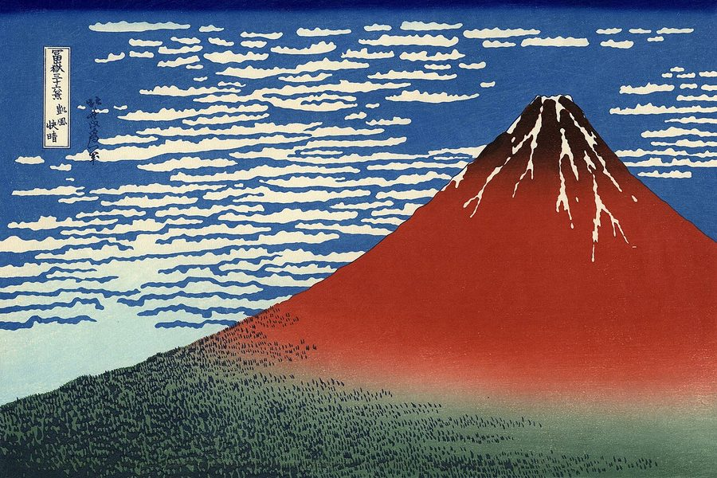

C1 · American Culture
The Text
Play the audio and follow along, then read it again on your own. Hover over a highlighted word to see what it means.
Listen & Read
Two Kinds of Courtesy
Travelling from southern Brazil to Japan, and finding that warmth and order are both forms of consideration.
Flying from Rio Grande do Sul to Japan is a longer journey than the map suggests. You board in Porto Alegre with the taste of chimarrão still in your mouth, and some hours later you are standing on a platform in Tokyo where nobody is speaking above a murmur. The adjustment is not difficult, exactly. It is simply total, and it begins before you have left the airport.
Life in Rio Grande do Sul is rooted in land and in people. The state's rolling hills and grasslands run out under an enormous sky, and Porto Alegre sits along the Guaíba, its skyline a mix of glass towers and colonial buildings. The wind carries woodsmoke and grilled meat, and Portuguese spoken with an accent that no one from the state will let you mistake for any other. Social life is warm, loud and unguarded: strangers become acquaintances over a shared gourd of chimarrão, and weekends are built around long tables where everyone talks at once and nobody minds. The infrastructure runs on a human rhythm rather than a mechanical one. Buses are late, but the conversation on board is good. Traffic jams, and nobody appears to be in a hurry about it.
Food carries most of the culture. A churrasco means thick cuts of picanha and costela over an open fire, shared with farofa, rice and cold beer, and it lasts as long as the stories do. People embrace on meeting, gesture while they talk, and say what they think. Personal space is negotiable; warmth is not.
Japan greets you with a bow instead of a handshake, and the difference is not coldness but a different theory of how to treat people. The first time a stranger steps aside on a crowded platform so that you can pass, or a shopkeeper thanks you with a nod held a half-second longer than you expected, you register the shift. Harmony is the unstated rule. Voices stay low on trains, shoes come off at the genkan, and silence functions as a form of respect rather than an absence of conversation. Consideration is collective: people do not eat while walking, rubbish is sorted with real precision, and a single “sumimasen” can carry the weight of a full apology. The language is genuinely difficult at first — the rolling Portuguese r against the clipped, even syllables of Japanese — but courtesy translates without help. Returning a bow slightly deeper than the one you received will open more doors than any phrasebook.
The contrast in infrastructure is the one most visitors notice first. Cities in Rio Grande do Sul are lively and imperfect: uneven sidewalks, public transport that is reliable without being punctual, and the occasional power cut or flood in a subtropical climate. Japan, by comparison, runs like a well-maintained machine. The streets are genuinely clean. Trains arrive at the minute printed on the board, and the Shinkansen crosses the countryside at three hundred kilometres an hour without spilling the coffee on your tray. Vending machines on every corner sell hot coffee and umbrellas. Buildings are engineered to move with an earthquake rather than resist it. None of this feels sterile once you understand what it is for: the system is built around the people using it, and its reliability is a courtesy extended at scale.
The beauty of each place works differently too. Rio Grande do Sul offers its landscape without arranging it — the misty valleys of the Serra Gaúcha, the Atlantic breaking at Torres, the low gold light across the pampas at the end of the day. Japan's is cultivated, and its seasons are observed almost as events. Spring brings the cherry blossom, pale over wooden temples and glass office blocks alike; autumn turns the mountains red and gold; and every park is composed rather than simply planted.
Walk through Kyoto during hanami and the phrase mono no aware begins to make sense — the quiet sadness attached to things precisely because they do not last. Petals come down like slow snow while families picnic beneath the trees, talking softly, which is about as far as you can get from a barbecue in Bento Gonçalves without leaving the subject of families enjoying an afternoon.
Standing at the foot of Mount Fuji, snow still on the summit against a hard blue sky, you understand why it appears in so much of the country's art. It is less a mountain than a fixed point. In Rio Grande do Sul nature feels like something you argue with and are fond of. In Japan it feels like something you stand in front of quietly.

The landmarks make the same point in miniature. In Rio Grande do Sul you might visit the sites of the Farroupilha Revolution, or the Italian-founded towns of the Serra where the wine is local and the polenta arrives whether you asked for it or not. In Japan you stand before Senso-ji at dusk in Asakusa, red lanterns moving slightly, incense drifting, the Tokyo Skytree lit in the distance. You miss the spontaneous embraces and the noise that made you feel immediately at home. You also acquire a taste for order as a form of kindness, for silence as a form of attention, and for a beauty that is admired precisely because it is about to end.
The journey does not merely change your itinerary. You come back — or you stay — wanting two incompatible things at once: a churrasco under an open sky, and the particular calm of a train that arrives exactly when it said it would. Neither place is the better one. They are answers to different questions, and having asked both is what makes the difference worth having.
Vocabulary
- unguarded — open and unreserved, without caution about what is revealed
- gourd — the hollowed shell from which chimarrão is drunk, passed around a group
- to register a shift — to notice a change consciously for the first time
- unstated — understood and obeyed without ever being said aloud
- genkan — the sunken entryway of a Japanese home, where shoes are removed
- sumimasen — a Japanese expression covering apology, thanks and getting someone's attention
- clipped — pronounced short and evenly, without drawn-out sounds
- sterile — clean to the point of feeling lifeless
- at scale — applied consistently to very large numbers of people
- cultivated — deliberately shaped and tended rather than left wild
- hanami — the custom of gathering to view cherry blossom in spring
- mono no aware — a Japanese term for the gentle sadness attached to things because they are impermanent
- in miniature — on a small scale, showing the same pattern as the larger thing
Interactive Exercises
Practice
Complete each exercise, then click Submit to see your score and an explanation for every answer.
Speaking & Writing
Discussion
There are no right answers here — use these to practice speaking, or write a short answer to each.
- The text argues that order and warmth are both forms of consideration. Which does your own culture use, and what does a visitor usually misread about it?
- “Reliability is a courtesy extended at scale.” Is punctuality a moral quality or merely a practical one?
- Is it possible to describe two cultures in contrast without implicitly ranking them? How close does this writer come?
- Mono no aware values something because it is about to end. Name something in your own life that is valuable for that reason.
- Write about 250 words contrasting two places you know well, holding to the rule this text sets itself: no ranking, and one concrete detail for every generalization.